El número uno del mundo , el ruso Gari Kasparov , estuvo otra vez a punto de ser derrotado por su compatriota Vladimir Kramnik en la sexta partida del Mundial oficioso que se disputa en los estudios Riverside de esta capital.
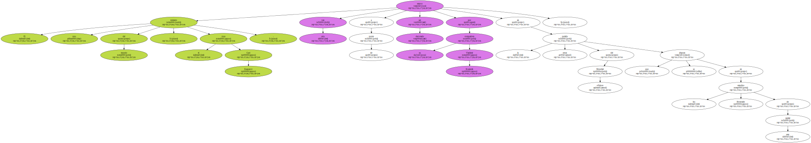Kasparov repitió el gambito de dama aceptado y Kramnik volvió a innovar y a poner en serios aprietos al " ogro de Bakú " que se ha salvado de sufrir su segunda derrota.
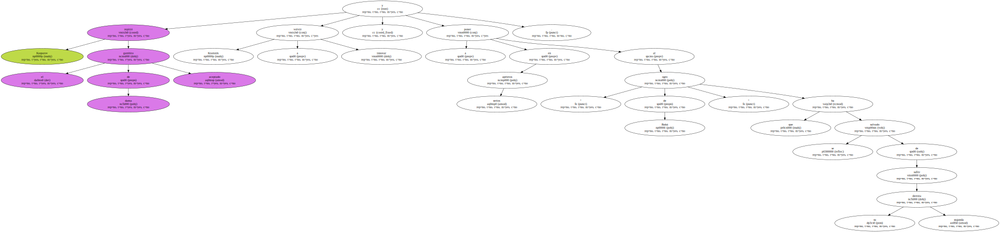La partida se animó pronto.
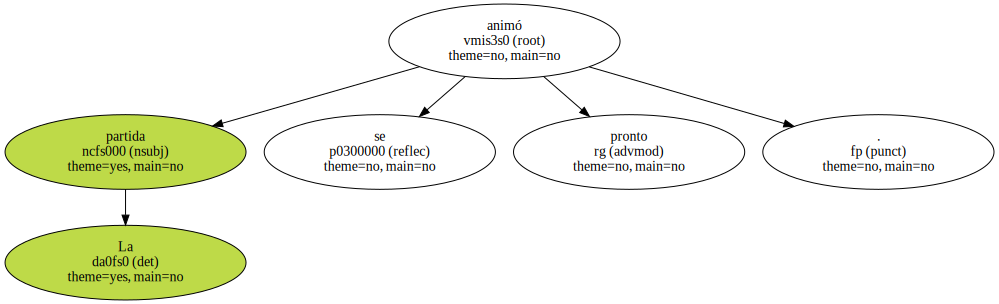Kramnik lanzó su infanteria del ala de rey , cuando Kasparov se había enrocado , logrando introducir un peón en la sexta casilla de la columna " h ".
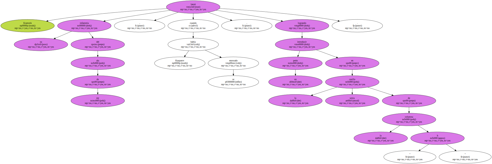Los dos mejores jugadores del mundo tuvieron que emplear muchos minutos en cada jugada dada la complejidad de la posición.
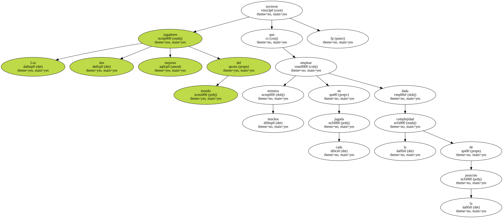Mientras Kramnik mantenía su presión en el ala de rey Kasparov intentaba un tímido contrajuego en el ala de rey.
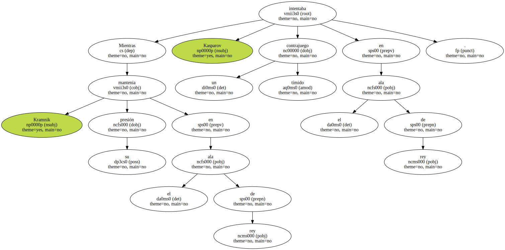Las blancas de Kramnik estaban mejor situadas y Kasparov tenía que limitarse a defenderse de las acometidas de aquel lo que le tenía muy contento.

Después del medio juego , la ventaja de las piezas blancas se iba acentuando.
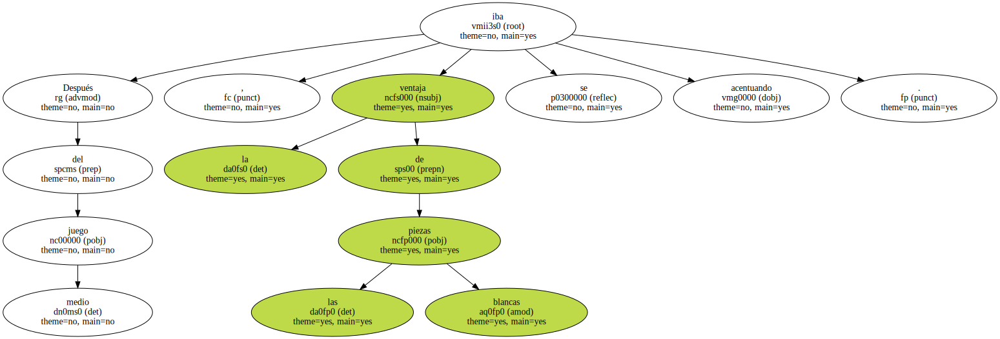Kramnik se limitó a comer peones dejando al campeón del mundo en posición desesperada.
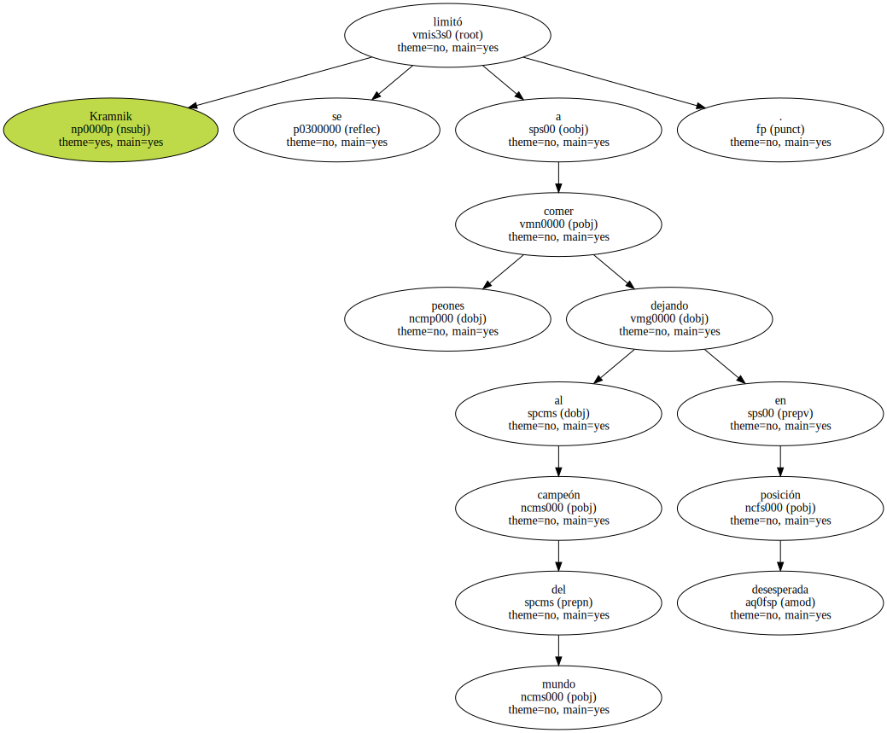No había nada que hacer y analistas y grandes maestros auguraban ya la segura derrota de Kasparov pero Kramnik no supo , o no pudo , rematar la partida y después de 66 movimientos se firmaron las tablas que no dejaron contento a ninguno.

La séptima partida , en la que Kasparov conducirá las piezas blancas , se disputará el próximo jueves 17.
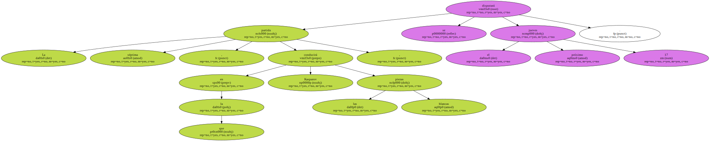Después de las seis partidas jugadas , Kramnik aventaja a Kasparov por 3,5-2,5.
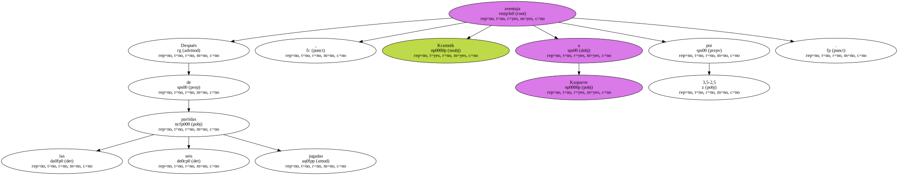Este Mundial se juega al mejor de 16 partidas y en caso de empate a ocho Kasparov conserva el título.
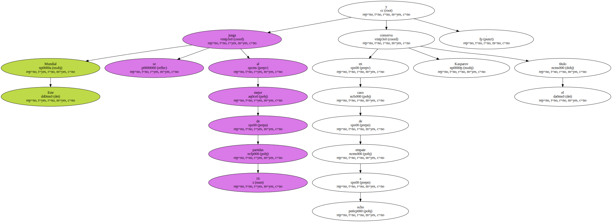